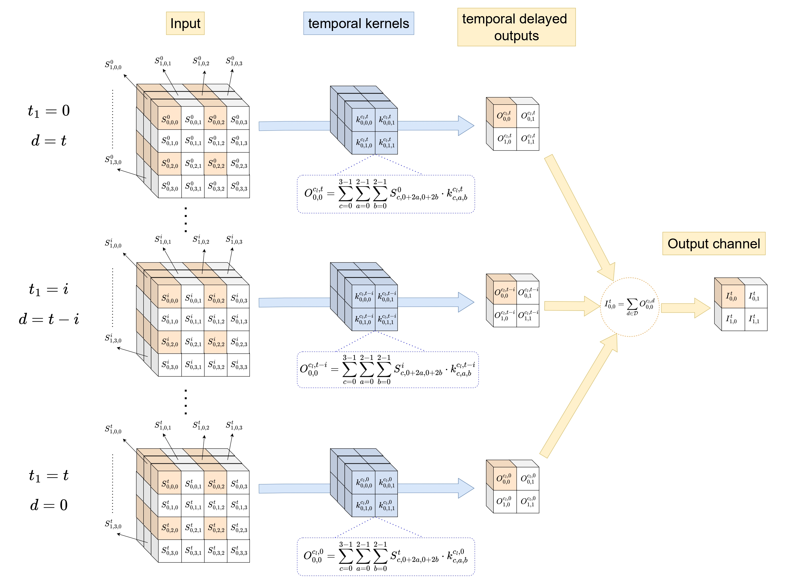

Welcome to my academic portfolio! I am a Ph.D. candidate at the Institute of Mathematical Sciences, specializing in Bayesian statistics, security issues, and Multi-Agent Reinforcement Learning.
Mario Chacón-Falcón is currently funded by the European Commission – NextGenerationEU, through Momentum CSIC Programme: "Develop Your Digital Talent"
Education
- Ph.D. in Mathematics Instituto de Ciencias Matemáticas (ICMAT) - Universidad Autónoma de Madrid (UAM) 2024 - Present
- M.S. in Logic, Computation and Artificial Intelligence Universidad de Sevilla (US) 2023 - 2024
- B.S. in Mathematics Universidad de Sevilla (US) 2019 - 2023
Research Interests
- Bayesian Methods
- Decision Making
- Reinforcement Learning
- Federated Learning
- Multi-Agent Systems
Recent Updates
Privacy-preserving federated learning AdaBoost via knowledge distillation
Our research combining AdaBoost, Knowledge Distillation, and Federated Learning for robust, privacy-preserving distributed learning has been published in Knowledge-Based Systems!
View PublicationCOML 2026 (InterCoML) — Prague
Oral presentation on Opponent-Aware Soft Q-Learning and served as discussant in Roundtable I on Adversarial, Risk-Aware Decision Making in Multi-Agent Systems at COST Action CA24136.
See Details
BAM-SLDK in IOP Neuromorphic Computing & Engineering
Our paper introducing biologically inspired attention mechanisms with spiking learnable delayed kernel synapses is published in IOP NCE.